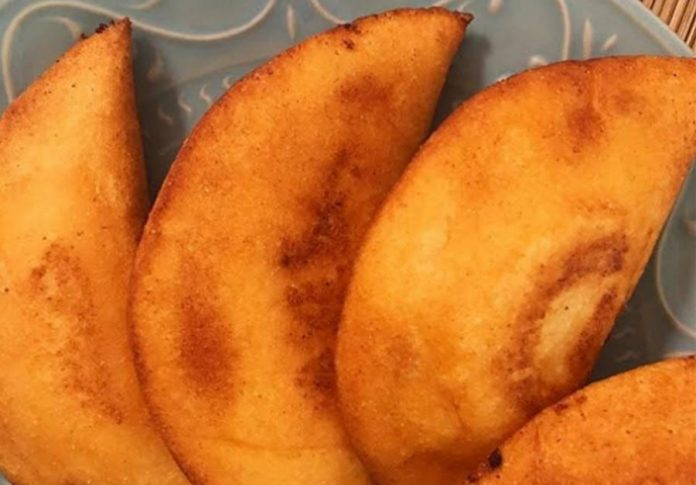

Empanadas

Description
Las empanadas son delicia, idiosincrasia, tradición, raíces... yo las amo!
Ingredients
- i2 tazas Harina Pan (harina de maíz)
- i1/4 de taza de Harina de Trigo
- i2,5 tazas agua
- i1 cdta sal
- i2 cdta azúcar
- iAceite para estirar la masa y para freír
- iRelleno al gusto
Steps
-
preparar la masa:En un tazón colocar la harina de maíz precocida, harina de trigo o maicena y la sal. Agregar el
agua y mezclar hasta hidratar la harina, amasa bien hasta obtener una masa suave y maleable, como plastilina. Si
la masa está muy seca, agregar mas agua y si está muy líquida, agregue mas harina de maíz. Dejar reposar la masa
por unos 10 minutos.
-
Tome una porción de la masa y haga una bola, colóquela sobre el plástico que habrá mojado ligeramente, extiéndela
con la mano o con ayuda de un plato o tabla, coloca una cucharada de relleno en el centro y dobla en forma de
media luna, con ayuda del plástico.
-
Puedes usar un envase para darle forma y cortar la empanada, esto ayuda a que queden del mismo tamaño y que los
bordes estén bien sellados para que no salga el relleno.
-
Se fríen en abundante aceite caliente o se hornean a 400 °F por 25 minutos aproximadamente.
-
Transfiera a un plato con papel toalla para absorber el aceite. Servir y disfrutar!